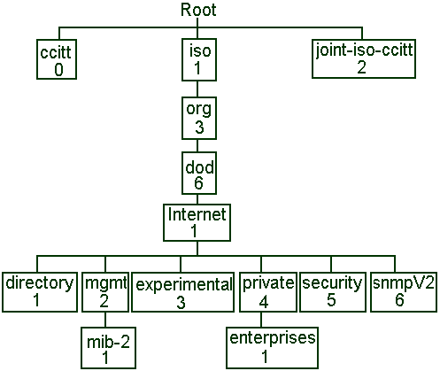
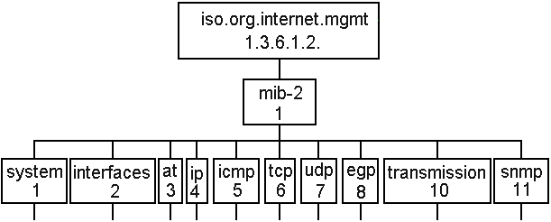

Valid operations that can be performed on the object (read, write, set)
VARIABLES :
Stored at a device is an individual instance of managed object. A variable have
to be implemented so that it conforms to its MIB object definition.
The formal template used to define MIB is the following one (here is the example
of sysDescr in RCF 1213)
sysDescr OBJECT-TYPE
SYNTAX DisplayString (SIZE (0.255))
ACCESS read-only
STATUS mandatory
DESCRIPTION
„Textual description of the entity.
This value include the full name and
the version identification of the system’s
hardware type, software operating-system
and networking software. It may only
contain ASCII printable characters "
::= { system 1 }
DATATYPE FOR MIB VARIABLES are simple such as integer or octet string.
OTHER OBJECTS
The interesting thing with the object-oriented point of view is that almost
everything can be considered as an object.
ISO AND CCITT STRUCTURE OF INFORMATION
ISO
and
CCITT
use the idea of structuring information into global naming tree
and assigning an identifier to each objects.

The main ISO/CCITT Tree
Below the developpement of the MIB Node.

The MIB node and its object identifiers.
ADMINISTRATIVE NODES IN THE ISO/CCITT TREE
A node can be used as a register that indicates who is in charge of the objects
under it. A node is defined in the tree for each administrative entity.
THE SUBTREE UNDER INTERNET CONTROL
Under
internet
there are 6 nodes. For this part about SNMP V.1 we are concerned
with the mgmt, experimental and private node. They are administrated by the
Internet Assignment Numbers Authority.
The mgmt (management) subtree is made of all accepted standard network
management variables.
Experimentation and research are under the experimental node.
GROUPS IN MIB MODULE
A
module
is a publication made by experts defining MIB object for a particular
area of technology.
Groups
are smaller units than large module. It is a group of objects. Useful
groups can be implemented by a vendor for a product.
VENDOR MIB DEFINITIONS
The private subtree enables private organisations to enhance the usefulness of
SNMP. Into its own part of the subtree, a vendor uses product identifiers an
the MIB definition that are needed to manage its products. Product identifiers
combined with the MIB-II system description variable allows a device to
identify itself precisely.
GLOBAL TREE TO ASSIGN IDENTIFIERS
The objects are a leaf node in the global tree. Each of the node is assigned a
label consisting of an integer and a quick description. The identifier of an
object is a series of integer guiding through the tree from the root to the
good leaf. This is called the
OBJECT IDENTIFIER
.